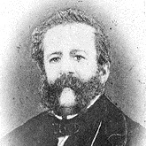

Schede autorità
| #ID | Nome | Relazione | Date | LOD | |
|---|---|---|---|---|---|
| #gl_pers | Giacomo Leopardi | L'autore dei Canti | 1798 - 1837 | RDF/TTL | |
| #ar_pers | Antonio Ranieri | Amico del poeta, a lui si deve la conservazione della maggior parte dei manoscritti autografi leopardiani e la pubblicazione di Le Monnier 1845 | 1806 - 1888 | RDF/TTL | |
| #pl_pers | Paolina Leopardi | Sorrella e confidente del poeta. A lei Leopardi dedica #leovar4 | 1800 - 1869 | RDF/TTL | |
| #ml_pers | Monaldo Leopardi | Padre del poeta | 1782 - 1854 | RDF/TTL | |
| #am_pers | Angelo Mai | A lui Leopardi dedica un'ode (#leovar3) e fra i due si instaura una corrispondenza epistolare | 1782 - 1854 | RDF/TTL | |
|  | #cp_pers | Carlo Pepoli | Amico del poeta, a lui Leopardi dedica #leovar19 | 1796 - 1881 | RDF/TTL |
| #gc_pers | Gino Capponi | Amico del poeta, a lui Leopardi dedica #leovar33 | 1792 - 1876 | RDF/TTL |